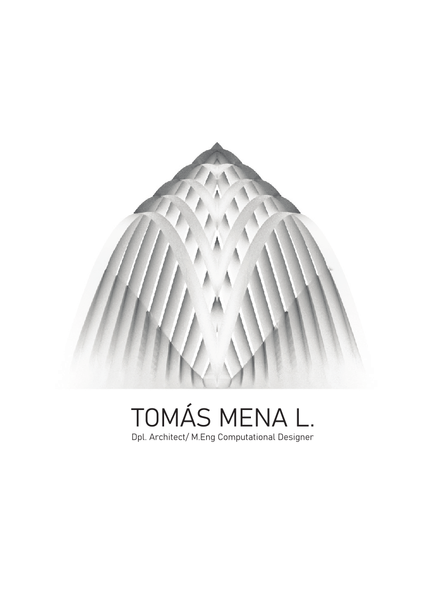
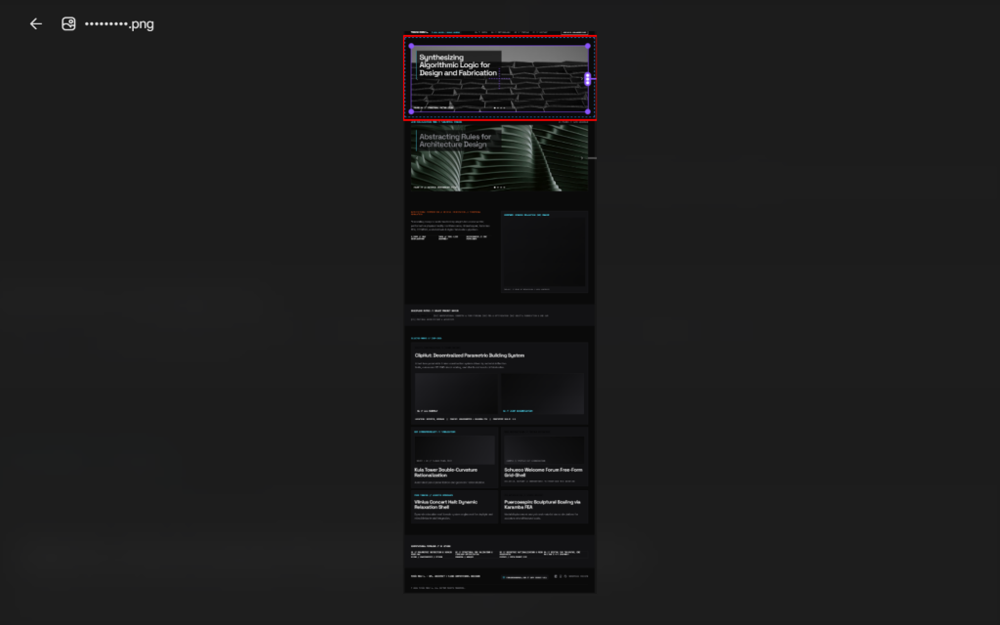

Priedemann Digital Twin & AEC Tools
Product Owner for custom parametric 3D construction tools, Agile dev-engineering workflows, and Digital Twin data structures.
SYSTEMS CATALOG // 2018—2026
Filter by discipline track or inspect any project to view its Problem → Computational System → Measurable Output specification.

Product Owner for custom parametric 3D construction tools, Agile dev-engineering workflows, and Digital Twin data structures.

Revit-to-Grasshopper coordinate interoperability and double-curved high-rise façade panelization rationalization.

Parametric timber kit with Karamba3D FEA structural simulation, 84-sheet CNC nesting, and web configurator architecture.

Python unstructured mesh restructuring, automated façade profile placement, and fabrication cut-angle calculation.
Generative design & digital fabrication linked to a live IoT sensor-to-Digital Twin WebSocket pipeline streaming O₂ data into Grasshopper.
Master Class at École Spéciale d'Architecture: digitizing discarded materials via 3D scanning into structured computational design assets.
Multi-scalar GIS mesh modeling, rationalization algorithms, and hybrid 3D printing / CNC sculpting exhibited internationally.
Dynamic Relaxation form-finding algorithms for timber-metal roof-façade envelopes and Karamba3D stress/displacement sculpting.
Guest lecture at University of Arizona & DigitalFUTURES workshop exploring generative AI and multi-agent systems across scales.
Experiential sound and ring product by The Alt Plus translating tactile gesture, wearable geometry, and acoustic resonance.